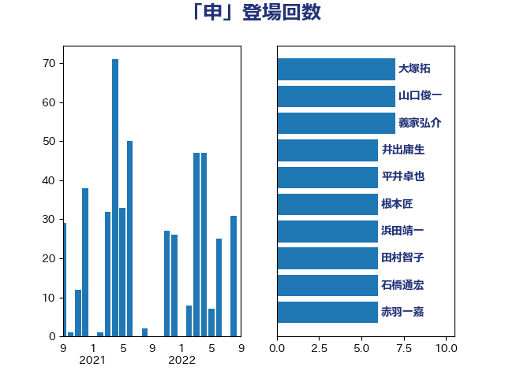

単語「申」

| 大塚拓 | 自由民主党 | 7 回 |
| 山口俊一 | 自由民主党 | 7 回 |
| 義家弘介 | 自由民主党 | 7 回 |
| 井出庸生 | 自由民主党 | 6 回 |
| 平井卓也 | 自由民主党 | 6 回 |
| 根本匠 | 自由民主党 | 6 回 |
| 浜田靖一 | 自由民主党 | 6 回 |
| 田村智子 | 日本共産党 | 6 回 |
| 石橋通宏 | 立憲民主党 | 6 回 |
| 赤羽一嘉 | 公明党 | 6 回 |
| 井上信治 | 自由民主党 | 5 回 |
| 城内実 | 自由民主党 | 5 回 |
| 松島みどり | 自由民主党 | 5 回 |
| 田村まみ | 国民民主党 | 5 回 |
| 鈴木馨祐 | 自由民主党 | 5 回 |
| 上野賢一郎 | 自由民主党 | 4 回 |
| 中島克仁 | 立憲民主党 | 4 回 |
| 原口一博 | 立憲民主党 | 4 回 |
| 古屋範子 | 公明党 | 4 回 |
| 塩川鉄也 | 日本共産党 | 4 回 |
| 大口善徳 | 公明党 | 4 回 |
| 奥野総一郎 | 立憲民主党 | 4 回 |
| 小里泰弘 | 自由民主党 | 4 回 |
| 平口洋 | 自由民主党 | 4 回 |
| 梅村聡 | 日本維新の会 | 4 回 |
| 橋本岳 | 自由民主党 | 4 回 |
| 田村憲久 | 自由民主党 | 4 回 |
| 石田真敏 | 自由民主党 | 4 回 |
| 薗浦健太郎 | 自由民主党 | 4 回 |
| 西村智奈美 | 立憲民主党 | 4 回 |
| 長島昭久 | 自由民主党 | 4 回 |
| 中根一幸 | 自由民主党 | 3 回 |
| 伊藤忠彦 | 自由民主党 | 3 回 |
| 古川禎久 | 自由民主党 | 3 回 |
| 吉川沙織 | 立憲民主党 | 3 回 |
| 岸田文雄 | 自由民主党 | 3 回 |
| 木原誠二 | 自由民主党 | 3 回 |
| 森英介 | 自由民主党 | 3 回 |
| 渡辺博道 | 自由民主党 | 3 回 |
| 細田博之 | 自由民主党 | 3 回 |
| 若宮健嗣 | 自由民主党 | 3 回 |
| 赤澤亮正 | 自由民主党 | 3 回 |
| 金子恭之 | 自由民主党 | 3 回 |
| 関芳弘 | 自由民主党 | 3 回 |
| 高木毅 | 自由民主党 | 3 回 |
| あかま二郎 | 自由民主党 | 2 回 |
| あべ俊子 | 自由民主党 | 2 回 |
| 三原じゅん子 | 自由民主党 | 2 回 |
| 中村裕之 | 自由民主党 | 2 回 |
| 丹羽秀樹 | 自由民主党 | 2 回 |
| 伊東良孝 | 自由民主党 | 2 回 |
| 佐藤勉 | 自由民主党 | 2 回 |
| 吉野正芳 | 自由民主党 | 2 回 |
| 大島敦 | 立憲民主党 | 2 回 |
| 大西健介 | 立憲民主党 | 2 回 |
| 岩渕友 | 日本共産党 | 2 回 |
| 後藤茂之 | 自由民主党 | 2 回 |
| 手塚仁雄 | 立憲民主党 | 2 回 |
| 柳ヶ瀬裕文 | 日本維新の会 | 2 回 |
| 永岡桂子 | 自由民主党 | 2 回 |
| 田島麻衣子 | 立憲民主党 | 2 回 |
| 田嶋要 | 立憲民主党 | 2 回 |
| 石原宏高 | 自由民主党 | 2 回 |
| 神田憲次 | 自由民主党 | 2 回 |
| 米山隆一 | 立憲民主党 | 2 回 |
| 越智隆雄 | 自由民主党 | 2 回 |
| 金田勝年 | 自由民主党 | 2 回 |
| 阿部知子 | 立憲民主党 | 2 回 |
| 高鳥修一 | 自由民主党 | 2 回 |
| こやり隆史 | 自由民主党 | 1 回 |
| 三ッ林裕巳 | 自由民主党 | 1 回 |
| 上川陽子 | 自由民主党 | 1 回 |
| 中谷真一 | 自由民主党 | 1 回 |
| 井上英孝 | 日本維新の会 | 1 回 |
| 伊藤孝恵 | 国民民主党 | 1 回 |
| 伊藤岳 | 日本共産党 | 1 回 |
| 伊藤達也 | 自由民主党 | 1 回 |
| 加藤勝信 | 自由民主党 | 1 回 |
| 古賀友一郎 | 自由民主党 | 1 回 |
| 吉田はるみ | 立憲民主党 | 1 回 |
| 吉良よし子 | 日本共産党 | 1 回 |
| 国定勇人 | 自由民主党 | 1 回 |
| 土井亨 | 自由民主党 | 1 回 |
| 土屋品子 | 自由民主党 | 1 回 |
| 坂本哲志 | 自由民主党 | 1 回 |
| 塩村あやか | 立憲民主党 | 1 回 |
| 大野敬太郎 | 自由民主党 | 1 回 |
| 守島正 | 日本維新の会 | 1 回 |
| 宮崎雅夫 | 自由民主党 | 1 回 |
| 山本博司 | 公明党 | 1 回 |
| 山田太郎 | 自由民主党 | 1 回 |
| 岡本あき子 | 立憲民主党 | 1 回 |
| 岸真紀子 | 立憲民主党 | 1 回 |
| 川田龍平 | 立憲民主党 | 1 回 |
| 新藤義孝 | 自由民主党 | 1 回 |
| 早稲田ゆき | 立憲民主党 | 1 回 |
| 本田顕子 | 自由民主党 | 1 回 |
| 杉尾秀哉 | 立憲民主党 | 1 回 |
| 杉田水脈 | 自由民主党 | 1 回 |
| 松本剛明 | 自由民主党 | 1 回 |
| 林芳正 | 自由民主党 | 1 回 |
| 柳本顕 | 自由民主党 | 1 回 |
| 梶山弘志 | 自由民主党 | 1 回 |
| 棚橋泰文 | 自由民主党 | 1 回 |
| 森屋隆 | 立憲民主党 | 1 回 |
| 橘慶一郎 | 自由民主党 | 1 回 |
| 江渡聡徳 | 自由民主党 | 1 回 |
| 河野太郎 | 自由民主党 | 1 回 |
| 津島淳 | 自由民主党 | 1 回 |
| 牧山ひろえ | 立憲民主党 | 1 回 |
| 田中良生 | 自由民主党 | 1 回 |
| 盛山正仁 | 自由民主党 | 1 回 |
| 石川大我 | 立憲民主党 | 1 回 |
| 福山哲郎 | 立憲民主党 | 1 回 |
| 福島みずほ | 社会民主党 | 1 回 |
| 笠浩史 | 無所属 | 1 回 |
| 菅直人 | 立憲民主党 | 1 回 |
| 菊田真紀子 | 立憲民主党 | 1 回 |
| 萩生田光一 | 自由民主党 | 1 回 |
| 藤岡隆雄 | 立憲民主党 | 1 回 |
| 西村康稔 | 自由民主党 | 1 回 |
| 西銘恒三郎 | 自由民主党 | 1 回 |
| 野田聖子 | 自由民主党 | 1 回 |
| 鈴木俊一 | 自由民主党 | 1 回 |
| 階猛 | 立憲民主党 | 1 回 |
| 青柳仁士 | 日本維新の会 | 1 回 |
| 馬淵澄夫 | 立憲民主党 | 1 回 |
| 高橋光男 | 公明党 | 1 回 |
| 高橋克法 | 自由民主党 | 1 回 |
| 鷲尾英一郎 | 自由民主党 | 1 回 |